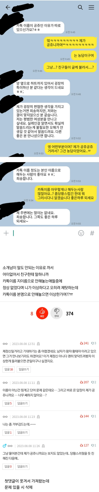

쉽지 않음

쉽지 않음
번호만 가지고 이름포함 신상정보의 많은 부분을 확인할수있어서 기본상태는 숨기고 멀티프로필로 공개하는게 좋음
나도 메인은 이름도 사진도 안걸어두고 업무방에는 다 멀프 설정해놓는중
단톡방 때문에 걍 실명 올려둠
공쥬는 진짜 대가리꽃밭이지
이렇게 된 이상 공쥬로 개명한다
난 내이름 특이해서 그냥 이니셜만 적어둠
간혹 특이한이름 개성있고 좋아보인다는 애들보면 인중 때라고싶어
박두루미야 반갑다
ㅋㅋ빅데이터 발동했네 마치 쿠로미 프사처럼
이니셜 해놨음 ASY
서른먹고 ~공쥬 이러고 있는애들 부류는 과학이지
팀 총무일 하는데 카톡 자기이름으로 안하고 hyun~이딴거해놓은새끼들때문에 화병올라뒤질것같음